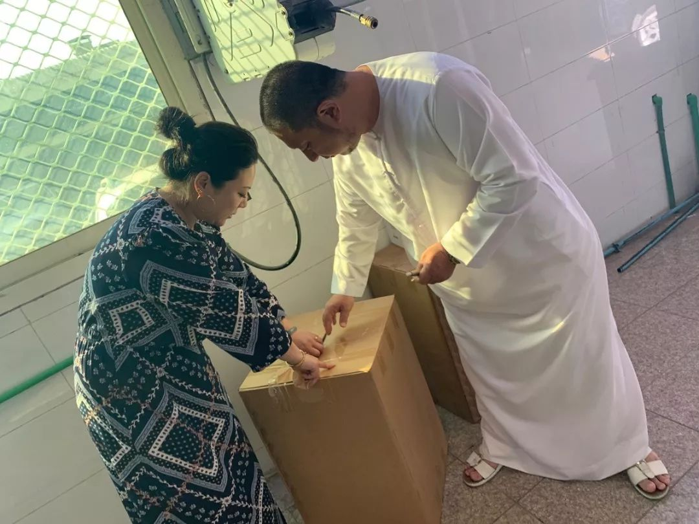
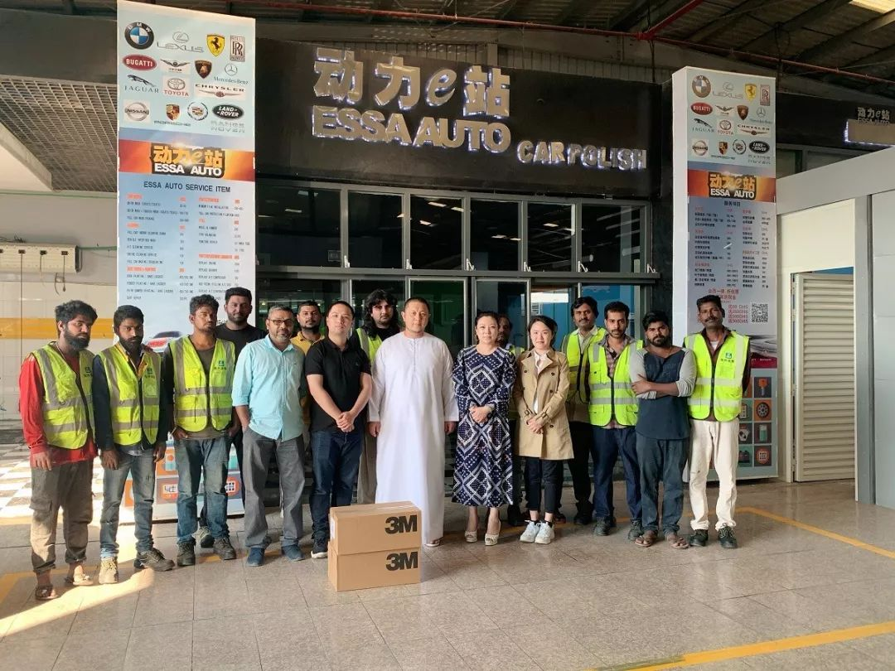
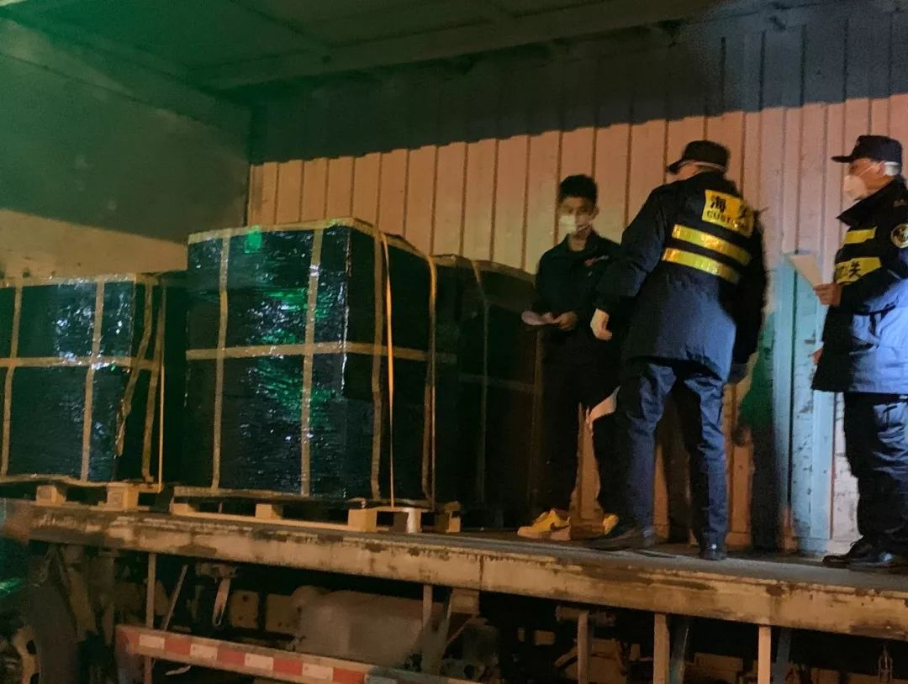

京东武汉战事：金银潭医院500米处，为机枪手递上子弹 | 深网
原文链接 备份链接 作者 | 孙宏超 编辑 | 康晓 出品｜深网·腾讯小满工作室 欢迎下载腾讯新闻APP，阅读更多优质资讯 _编者按：_牵一发而动全身，面对疫情，需要中国全行业上下游企业携手共度难关，深网推出《共克时艰》系列报道，是为第一 …

这样的经历让我们这次“两人世界”变得很值得、很难忘，也很有意义。当我们跟家里老人说，将帮助海外华人实现爱心心愿、把援助物资运回国时，他们也都非常支持。老人还让我们放心，说家里孩子都没事。
口述 | 王珠凤
整理 | 应 琛
我叫王珠凤，是上海海关隶属嘉定海关的关员。
1月24日，我和老公按照原定计划去往迪拜旅游。我们本来准备先在迪拜城市里玩三天，然后去沙漠玩两天。
但计划赶不上变化。第一天晚上回到酒店后，我就在媒体视频里刷到一条迪拜华人商会发布的求助信息，称“有没有人从迪拜回国，可以帮忙带一些‘行李’回去，因为行李是大批的口罩，需要以行李物品的方式带回国内”。
视频信息发布者是迪拜华人商会圈内颇有名气的“董姐”。我从大众传媒也得知，国内疫情有愈发严重之势，口罩等防疫物资万分告急。
这种情况下，当地华侨华人都表达出了这样的爱国之情，我作为中国人，也想要尽可能提供帮助。于是我给董姐留言，想了解核实一下“行李”的具体情况。

董姐夫妻在打包物资
后来，我加入了董姐建立的微信群。群聊中，我得知董姐为了筹集这些援助物资，审核还挺严格的。比方说，国内有哪家医院需要援助，他们会让对方先提供工作证明，还要求发送科室门口的照片等等。
在进一步沟通后，我了解到，当地华人已经与国内湖北省武汉市、荆州市、孝感市的多家医院联系上，与已是全国焦点的金银潭医院相比，这些医院的防护物资显得尤加匮乏。
董姐原先的计划是，请求旅游团队予以协助，以游客行李物品的方式将援助物资带回国内，再通过物流运送至指定医院。

为了确定董姐的真实身份和援助物资的真实性，我还去了她家，在她家中确实看到了很多援助物资。
我和老公原先想帮他们带30公斤左右的行李，但现在知道他们有七八个大旅行箱的物资，我就向董姐表明了自己在海关工作的身份，并问她需不需要帮忙找个物流公司空运回国。
王珠凤（右）和董姐
取得互相信任、达成共识后，我和老公便开启了“工作模式”。我联系了自己所在的嘉定海关，并在同事们的沟通下，联系好了上海心嘉物流公司作为报关承办单位。因为平时工作时有交流，知道该公司管理规范、社会诚信度好。该公司第一时间也表示要向湖北献爱心，所有的运费由他们自己来承担。后续的安排如：物流公司订舱，以空运渠道运输，再通过嘉定出口加工区快速通关入境……我都全程跟进，心嘉公司也很给力。

由于时间紧急，为了保证所有物资的安全可靠，我和老公也帮忙做好物资装箱、统计数量、整理所需材料等事宜。仅仅2天，他们就把所有援助物资整理完毕，并协助运送机场。
这里还有个插曲，当我1月29日晚上上飞机的时候，董姐还电话问我，货是不是已经发出了。因为当天，迪拜新增了4例肺炎确诊病例。董姐说，她相信国内的疫苗研发肯定很快，等复工之后，口罩生产能力也肯定能满足需求，但如果迪拜一旦爆发，就没有口罩了，因为迪拜纯粹是进口，而且当地医疗水平也很落后。她说，如果国内疫情稳定下来后，万一迪拜发生了疫情，也希望我们可以去支援他们。我深深感到，董姐为了表示海外华人的爱国情怀，这也是忍痛割爱了。
其实，董姐当天自己去买口罩时，就发现原本早上还卖10元人民币50个的一次性口罩，晚上就变成了50元人民币50个，而且根本买不到。
事实上，这次旅行，我们早在半年前就已经定了机票、定了酒店，也向单位请了假期。这是我和老公结婚后，唯一一次两个人的旅行。当时我俩觉得这次疫情是完全可以控制的，肯定最后是“虚惊一场”，所以没有取消行程，还是去了。
起初我们也有过纠结和犹豫，但转念一想，这样的经历让我们这次“两人世界”变得很值得、很难忘，也很有意义。当我们跟家里老人说，将帮助海外华人实现爱心心愿、把援助物资运回国时，他们也都非常支持。老人还让我们放心，说家里孩子都没事。
1月30日，我和老公安全回国，现在按要求居家隔离，但我还是时刻关注着这批援助物资的动向。

2月1日下午6点，伴随着一辆大型集卡车驶入嘉定出口加工区，这辆从浦东机场发出的货车，装着迪拜华人商会援助的70420枚口罩、20000副防护手套、护目镜等疫情防控物资，经过绿色通道迅速入境。一个小时后，这批物资又在心嘉物流的运送下，直奔湖北，传递爱心接力。
此时，我和老公的心终于定了下来。我想说，能在这么短的时间内将物资运回国，离不开大家的共同努力。这不止是我们两个人，全国各行各业都在为抗击疫情做贡献。
征集令
《新民周刊》现面向全国征集新冠肺炎采访对象和真实故事：
如果你是参与抗击新冠肺炎疫情的医护人员或其家属，我们希望聆听你的“战疫”故事，也希望传达你的诉求。
如果你是确诊、疑似患者本人或家属，我们希望了解你和家人如何“抗疫”的过程，让外界了解你的真实经历。
如果你是疫情严重地区的普通市民，我们希望展现你的乐观，并倾听你所需的帮助。
如果你是公共服务人员或各类捐助者，我们希望看到你的“最美逆行”，记录下你的无私。
……
抗击新冠肺炎疫情，我们诚征对疫情了解的社会各界人士，提供相关线索，说出你的故事，让我们用新闻留存这一切。
《新民周刊》新冠肺炎线索征集值班编辑联系方式（添加时请简要自我介绍）：
周一：应 琛 微信号：paulineying0127
周二：金 姬 微信号：gepetta
周三：黄 祺 微信号：wxid_bf5mudid7oz322
周四：周 洁 微信号：asyouasyou
周五：孔冰欣 微信号：kbx875055141
周六：吴 雪 微信号：shyshine1105
周日：姜浩峰 微信号：jianggeladandong
新闻是历史的底稿，你们是历史的见证者。期待你的故事、你的线索！

▼
大家还都在看这些
▼
转载请在评论区留言，获得授权！
转载时，须注明作者、出处和微信号


原文链接 备份链接 作者 | 孙宏超 编辑 | 康晓 出品｜深网·腾讯小满工作室 欢迎下载腾讯新闻APP，阅读更多优质资讯 _编者按：_牵一发而动全身，面对疫情，需要中国全行业上下游企业携手共度难关，深网推出《共克时艰》系列报道，是为第一 …
原文链接 备份链接 老母亲问我为啥这么拼命，又没人给开工资。我回说，这次真的拼了命了，只因为我是您的孩子，也是一个父亲。这不，我看到日本朋友捐助武汉的物资上，日本汉语水平考试事务所物资上的字——“山川异域，风月同天”。作为武汉人，难道我不 …
原文链接 备份链接 《战疫口述记》，是燃财经在新型冠状病毒肺炎期间推出的特别栏目，记录疫情亲历者的观察和感受。本文为第6篇，查看前5篇请点击《我和公司都快熬不住了》《节后返京，太太太南了》《我的“流浪”春节》《农村这样防肺炎》《我在武汉 …
原文链接 备份链接 什么拉长了社会捐赠物资从红十字会的仓库到疫情一线医务人员手中的最后短暂的路程？又是谁夺走了医生上战场的武器？ 记者 | 郭苏妍 叶雨晨 邓舒夏 王一越 编辑 | 张云亭 制图 | 程 星 2月1日，中国红十字总会工作 …
原文链接 备份链接 【财新网】（记者 丁捷 综合）2020年2月第1天， 新型冠状病毒确诊患者数量已突破万人。仅次于武汉的重疫区——湖北黄冈下达“史上最严出行令”，2月1日起，严格控制市区居民出行。每户家庭每两天可指派1人上街采购生活物 …